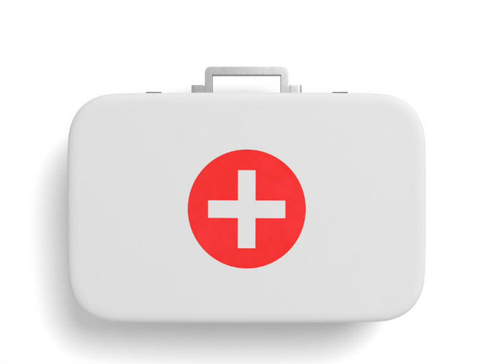

Aprende primeros auxilios basicos

Un accidente puede suceder en cualquier momento y en cualquier lugar ¿Has pensado como actuar si ocurre? ¿Sabes auxiliar a las victimas de un accidente o una caida? ¿Tienes preparación para ello? ¿Qué distingue a una emergencia de una urgencia?
Diariamente estás vulnerable a situaciones que pueden afectar tu salud y no siempre eres cons- ciente de ello Piensas que puede ocurrirle a los demás pero no a ti, sin embargo, es necesario promover un conjunto de actitudes y creencias positivas sobre la salud, riesgos, accidentes, en- fermedades y medidas preventivas que generen protección
Estas prácticas generalmente son desconocidas por gran parte de la población y no se les da la importancia que ameritan. En la actualidad, saber como hacer frente a las emergencias es elemental para adoptar criterios bien definidos y estructurados para la identificación, la evaluación y el control de los riesgos.
México enfrenta complejos problemas de salud pública ante la creciente de- manda de atención de servicios de urgencia originados por lesiones de causa extema, enfermedades y discapacidad que pueden disminuirse mediante la intervención oportuna y adecuada de personas capacitadas.
La atención inmediata de una emergencia es parte fundamental del Servicio Médico de Urgencias (SMU) debido a que el tiempo entre una lesión o enfer medad y su tratamiento inicial es crucial para preservar la vida o la función de los órganos afectados